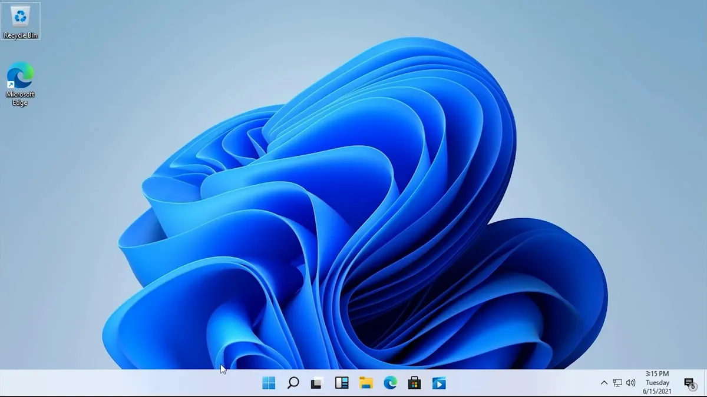
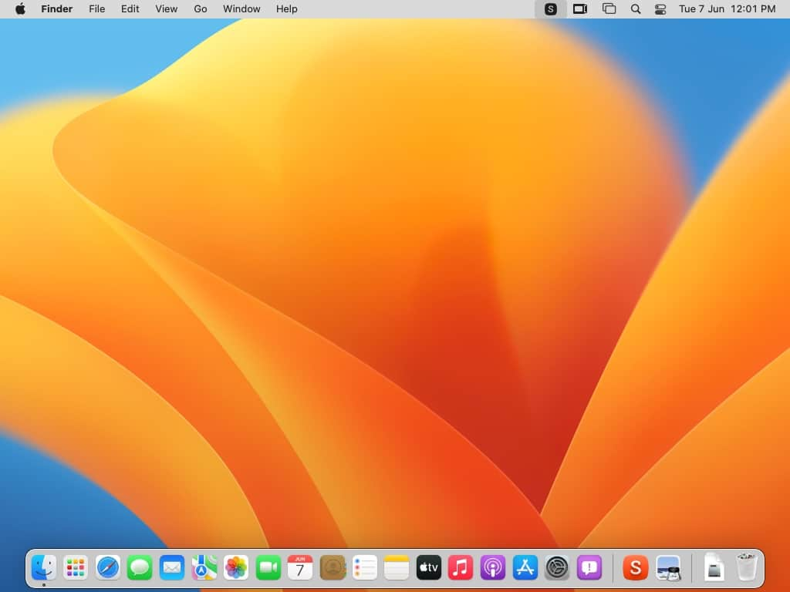
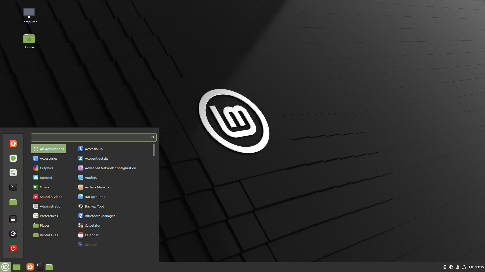

Qu'est-ce qu'un système d'exploitation
Un système d'exploitation ( OS ) est un logiciel système qui gère le matériel informatique, les ressources logicielles et fournit des services communs pour les programmes informatiques.
Les différents types de systèmes
Le système d'exploitation informatique personnel à usage général dominant est Microsoft Windows avec une part de marché d'environ 74,99 %. macOS d'Apple Inc. occupe la deuxième place (14,84 %), et les variétés de Linux occupent collectivement la troisième place (2,81 %). Dans le secteur mobile (y compris les smartphones et les tablettes ), la part d'Android est de 70,82 % en 2020.
Windows
Microsoft Windows est une famille de systèmes d'exploitation propriétaires conçus par Microsoft Corporation et principalement destinés aux ordinateurs basés sur l'architecture Intel, avec une part d'utilisation totale estimée à 88,9 % sur les ordinateurs connectés au Web. La dernière version est Windows 11 .
MacOs
macOS (anciennement "Mac OS X" et plus tard "OS X") est une gamme de systèmes d'exploitation graphiques à noyau ouvert développés, commercialisés et vendus par Apple Inc., dont le dernier est préchargé sur tous les ordinateurs Macintosh actuellement commercialisés .
Linux
Linux ressemble à Unix, mais a été développé sans aucun code Unix, contrairement à BSD et ses variantes. En raison de son modèle de licence ouverte, le code du noyau Linux est disponible pour étude et modification, ce qui a entraîné son utilisation sur une large gamme de machines informatiques, des superordinateurs aux smartwatches.
Une image de Linux Mint, une des distribution de Linux :
